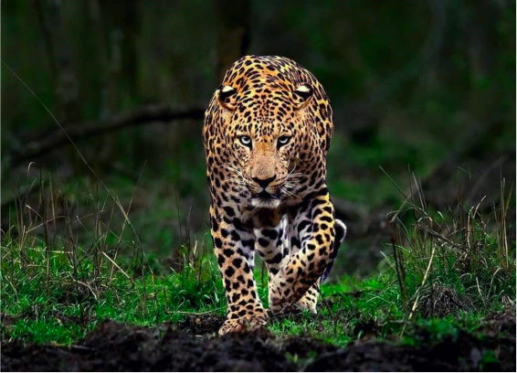

My Favourite Animal
• Size & Build: Possesses a stocky, muscular body, short legs, and a long tail that helps with balance.
• Speed: Can run up to 36 mph (58 km/h).
• Lifespan: Typically lives between 12 and 17 years in the wild.
• Appearance: Features pale yellowish to dark golden fur covered in dark, ring-like spots called rosettes.
Click Here To Know More
